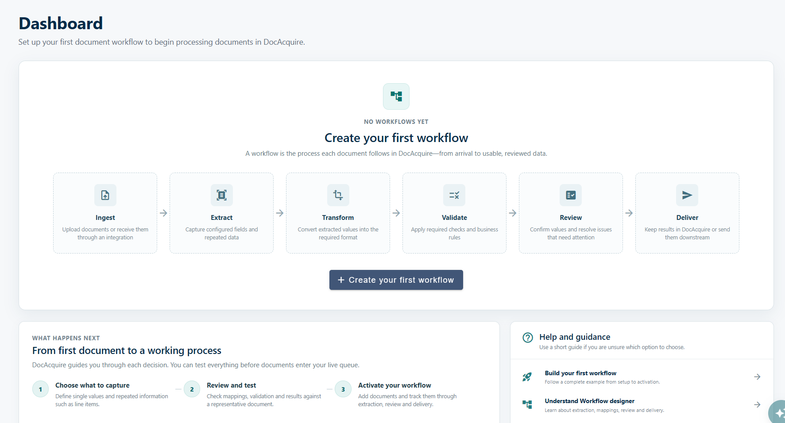

Invoice processing
Capture supplier details, totals and line items. Bring values into the right format, check required data and review issues before delivery.
DOCUMENT WORKFLOW AUTOMATION
Give every document a clear path, from arrival to usable, reviewed data. Set up how you ingest, extract, transform, validate, review and deliver in DocAcquire.
Trusted by teams
across industries
THE WORKFLOW, END TO END
Extraction is part of the process. Connect it to everything that happens before and after, with a workflow built around your business.
01 / INGEST
Upload documents or receive them through an integration. Ingestion brings documents into the workflow so the next steps can begin.
How will documents enter this workflow?
A supplier invoice enters the workflow, ready for the configured fields to be captured.
Illustrative scenario. Configure the process for your documents.
START WITH YOUR FIRST WORKFLOW
Define what to capture, test it with a representative document, then activate your workflow when you’re ready.
Define single values and repeated information, such as line items.
Check mappings, validation and results against a representative document.
Add documents and track them through extraction, review and delivery.

YOUR DOCUMENTS. YOUR PROCESS.
Start with the document you work with. Shape the fields, checks and review around the data your team needs.
Capture supplier details, totals and line items. Bring values into the right format, check required data and review issues before delivery.
Extract order information and repeated item data. Apply the checks your process needs and prepare reviewed results for the next system.
Capture the information you need from claim documents. Standardize values, check required fields and keep reviewers involved where attention is needed.
Illustrative workflows. Your configuration depends on your documents and business requirements.
AUTOMATION WITH OVERSIGHT
Make the handoff between documents, data and people part of the workflow from the beginning.
Talk through your processTransform extracted values before they move further through your process.
Apply required checks and business rules before results reach their destination.
Confirm values and resolve issues that need attention in the review stage.
OUR CUSTOMER SUCCESS
Hear from the teams using DocAcquire to process complex documents and automate their work.

"The complexity of the documents we process was a challenge for every vendor we assessed, but DocAcquire did the job perfectly."
Reduction in
manual effort

"DocAcquire solution in data capture and ML models allow us to expand our services offer through a strong combination of technology accuracy dealing with complex unstructured data, flexibility and outstanding support."
Reduction
in cost
"DocAcquire was super easy to get up and running. Within 15 mins we'd extracted all data, within an hour we'd configured our own document types, within a day we'd it integrated with our end-to-end workflow processes."
Reduction in
processing time

"DocAcquire is a great solution to capture data from various sources with multiple formats. DocAcquire has helped us to help our customers to deliver a great value and helps in end to end automation using RPA."
Reduction in
processing time
Reduction in
processing time
A workflow is the process each document follows in DocAcquire, from arrival to usable, reviewed data. It connects ingestion, extraction, transformation, validation, review and delivery.
Start by choosing what to capture, including individual fields and repeated information such as line items. Then check the mappings, validation and results with a representative document before activating the workflow.
Transformation converts extracted values into the format you need. Validation applies required checks and business rules to that data. Both happen before the review and delivery stages.
Yes. The review stage is where your team can confirm values and resolve issues that need attention before the results are delivered.
You can keep results in DocAcquire or send them downstream. The delivery setup determines where the data goes as part of your workflow.
Yes. Review and test your mappings, validation and results against a representative document before activating your workflow.
LET’S CONNECT THE STEPS
Show us your process. We’ll help you explore how it fits in DocAcquire.